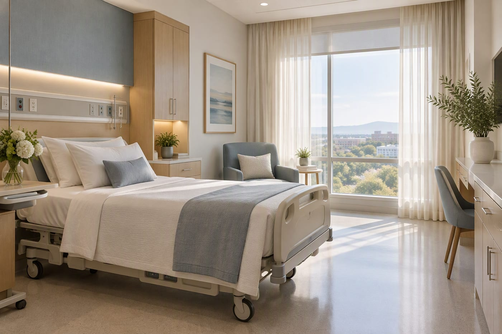

Listen first
The patient's account of what is happening is clinical information, not background noise. We make room for it before reaching for a test.
We are a fictional 240-bed hospital in Northbridge, California, created to show what care can feel like when clinical rigour and human warmth are treated as equally important.
CareWell Hospital is a fictional demonstration project. Every person, statistic and credential on this site is illustrative.
Sample consultation room at our fictional hospital.
People rarely remember every test result. They remember whether someone explained it, whether they felt rushed, and whether the plan made sense for their life.
CareWell began in 1998 as a small outpatient clinic with six clinicians and a waiting room that felt more like a living room. The founding team believed that good medicine was being practised in the city, but the experience around it had become fragmented: different records, different phone numbers, different instructions at every step.
Over nearly three decades, the clinic grew into a full hospital. The buildings changed, the technology changed, and the range of care expanded. What did not change was the organising idea: design the system around the person receiving care, not around the departments delivering it.
Today, our fictional hospital brings together emergency care, surgery, maternity, pediatrics, diagnostics and outpatient specialties on one campus. Patients can move between services without starting their story again — because the people looking after them share a plan.
1998
First clinic opened
240
Inpatient beds today
All dates and figures are illustrative sample content.
Values are only useful if they change how a waiting room works, how a handover is given, and how a difficult conversation is handled.
The patient's account of what is happening is clinical information, not background noise. We make room for it before reaching for a test.
No jargon without translation. We check understanding, invite questions, and put the plan in writing when that helps.
Clinicians bring evidence and experience. Patients bring priorities, responsibilities and a life outside the hospital. Good decisions need both.
Each expansion was planned around continuity: keeping records, teams and relationships connected as the hospital grew.
The following timeline is fictional and created for this demonstration.
1998
Six clinicians, a shared reception desk and a commitment to longer first appointments.
2006
Seventy-two beds, a day-surgery unit and the hospital's first on-site laboratory.
2014
A 24/7 emergency department and maternity centre opened, linking acute and family care on one campus.
2021
A shared clinical record and coordinated care model replaced paper handovers between departments.
2026
Ten specialties, 90+ doctors, 240 beds and a continued focus on the experience around the medicine.
Hospitals are stressful places by nature. The environment cannot remove that, but it can avoid adding to it.

Single-occupancy rooms with natural light, a reclining chair for a visitor and space to move safely.

Private rooms for labour, birth and the first days of parenthood, with neonatal support close by.
Calm, accessible consulting rooms designed for unhurried conversation and shared decision-making.
Small details that make a long day more manageable.
Clinical care carries risk. What matters is how a hospital designs for it, notices it early, and responds when things go wrong.
About these examples
CareWell is fictional. The practices described here are illustrative examples of how a hospital might approach safety; they are not claims about a real institution.
High-risk medications, surgical sites and allergy status are confirmed by more than one clinician, using standardised checklists.
Every ward starts the day by reviewing risks, staffing, equipment and patients who need extra attention.
When care does not go to plan, we explain what happened, what we are doing about it, and how the family will be supported.
Incidents are reviewed for system causes rather than individual blame, and changes are tracked to completion.
24/7
Critical care cover
2
Clinician sign-off for high-risk medicines
1
Shared care record
Illustrative operating principles, not published performance data.
Prevention, education and follow-up matter as much as treatment. Our fictional community programme is built around practical support that fits real lives.
Book a sample appointment, meet our fictional clinicians, or explore the services available on campus.